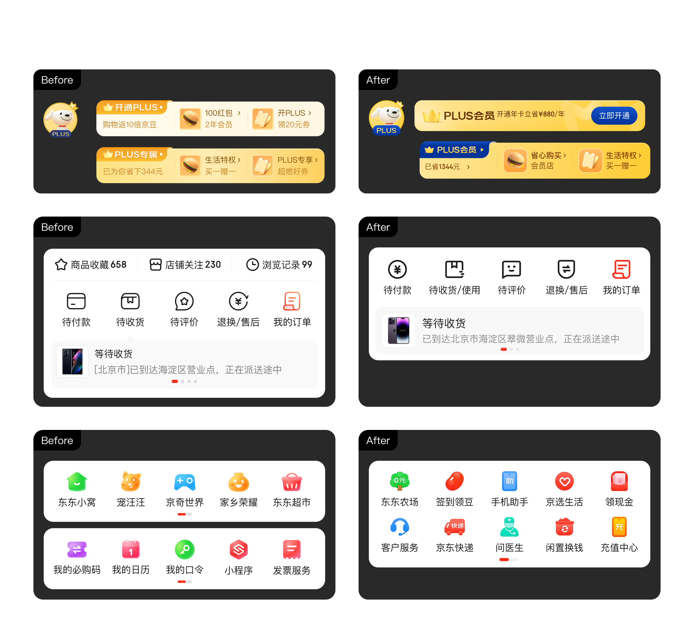
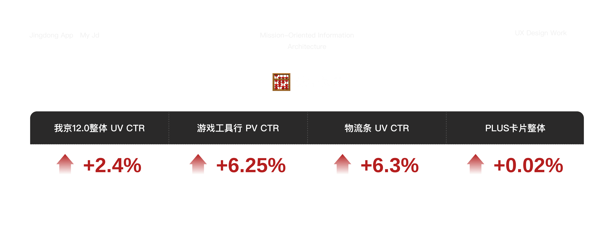
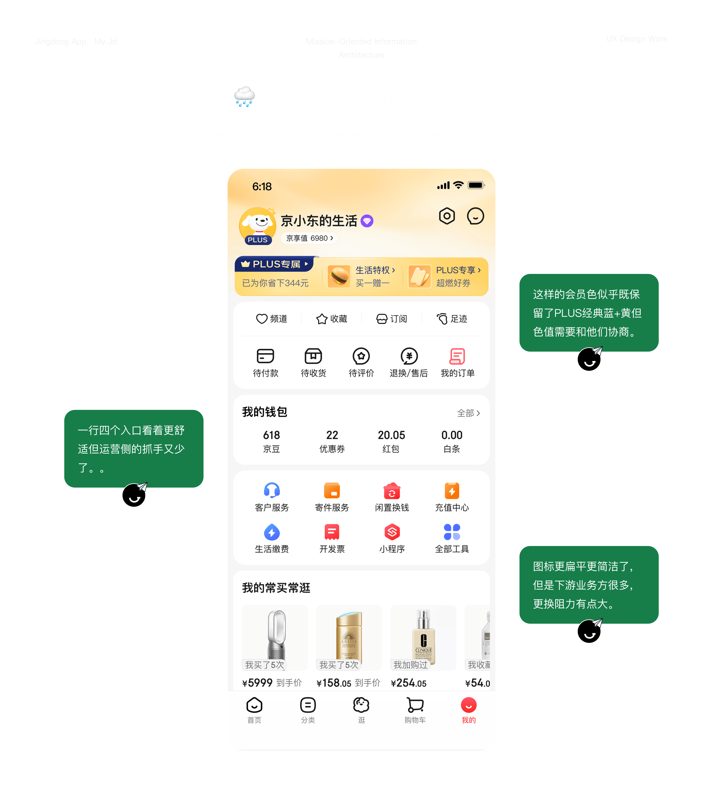
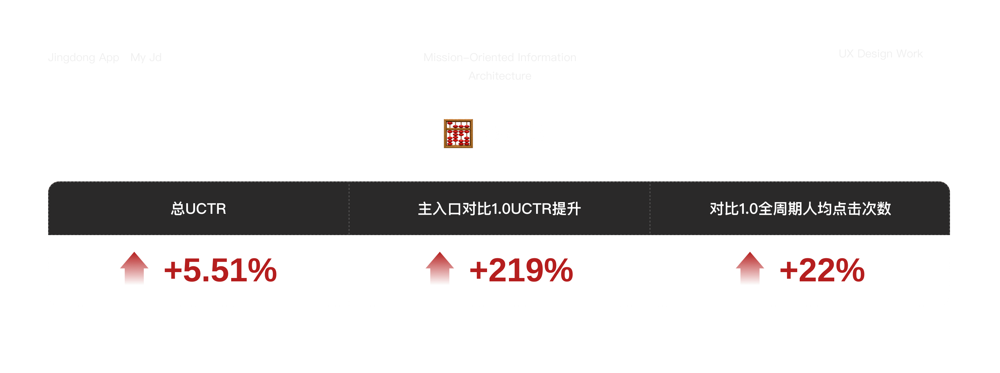

项目概览
🖥️
时间与类型
时间周期：2023-2024
项目类型：核心页面改版
🥳
我的角色
改版项目视觉设计师之一
我京模块主视觉设计师
🌍
项目背景
随着我京从营销定位向工具定位转变，需强化工具属性+视觉调优。
时间周期：2023-2024
项目类型：核心页面改版
改版项目视觉设计师之一
我京模块主视觉设计师
随着我京从营销定位向工具定位转变，需强化工具属性+视觉调优。
动线：用户常用功能工具不够聚合
屏效：头部空白可缩减提升屏效
会员：会员身份视觉不突出，品牌力传达不足
视觉：细小文字多，层级嵌套，质感旧
聚合功能+提升屏效+简化视觉+强化身份
在保留各版块大的结构不变动下，优化功能布局与视觉表达
让页面更清晰、更高效，也更符合京东 12.0 的整体升级方向。


围绕「简单、低价、至真至简」的设计方向，与12.0至真至简的设计语言，探索页面卡片、图标、色彩、氛围和整体视觉节奏。与PLUS团队合作定义全新的色值与图形使用规则，在整体链路上透出会员身份。
视觉：负责「我的京东」页面主视觉方案设计，优化顶部会员区、功能入口、钱包资产、工具区和底部内容模块。
落地：与产品、运营和研发团队协作，完成方案评审、设计走查、上线跟进和数据复盘。

时间周期：2022
项目类型：我京重点项目
项目主设计师
3d和动画设计师
强化福利运营能力，通过“小福星”设计，提升模块数据。
福利感知弱：原气泡形式容易被误解为信息通知
屏效：大气泡占据高度大
福利：运营侧整合了各端福利，需强化表达
在不破坏我京原有结构的基础上，新增更醒目的福利入口与承接页面，让用户更容易发现、领取和回看福利，同时提升我京模块的营销效率。

设计我京首页中的小福星福利入口，优化头部区域高度、背景氛围、福袋入口和动效表现，提升点击效率。
完成优惠券、PLUS 权益、京豆等福利内容的视觉整合，让不同类型福利具备统一的领取体验。和研发团队协作，完成方案评审、设计走查、上线跟进和数据复盘。
